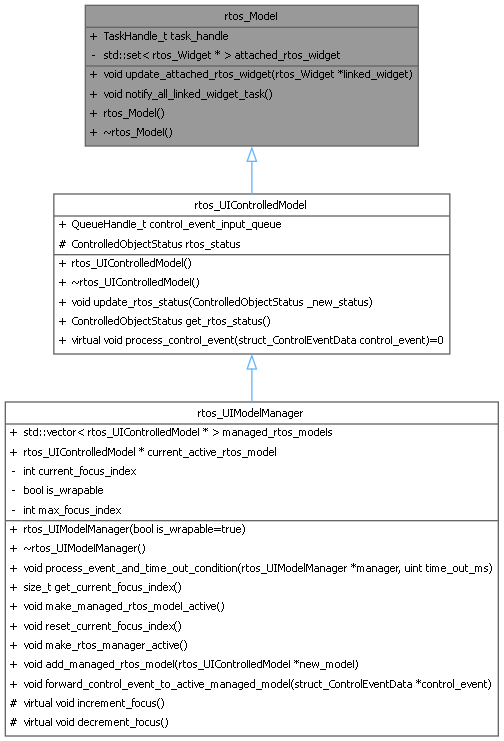
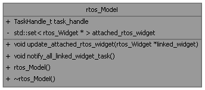
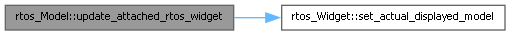

- Generated by
 1.16.1
1.16.1
RTOS wrapper for Model class This class represents the base model in the RTOS-based UI framework. More...
#include <rtos_ui_core.h>


Public Member Functions | |
| void | update_attached_rtos_widget (rtos_Widget *linked_widget) |
| link a new widget task to the model | |
| void | notify_all_linked_widget_task () |
| notify all linked widget tasks that the model has changed | |
| rtos_Model () | |
| constructor for RTOS model | |
| ~rtos_Model () | |
| destructor for RTOS model | |
Public Attributes | |
| TaskHandle_t | task_handle {nullptr} |
| the task handle of the model task | |
Private Attributes | |
| std::set< rtos_Widget * > | attached_rtos_widget |
| the set of linked widget tasks | |
RTOS wrapper for Model class This class represents the base model in the RTOS-based UI framework.
It manages a set of linked widget tasks and provides mechanisms to notify them of changes. The model is designed to be extended by more specific models that represent different types of data or functionality in the UI. The rtos_Model class maintains a set of attached rtos_Widget pointers, which represent the widgets that are linked to this model. When the model changes, it can notify all linked widget tasks to update their display accordingly.
The rtos_Model class also includes a FreeRTOS task handle, which can be used to manage the model's own task if needed.
The rtos_UIControlledModel class extends rtos_Model and adds functionality for handling control events.
| void rtos_Model::update_attached_rtos_widget | ( | rtos_Widget * | linked_widget | ) |
link a new widget task to the model
| linked_widget | the widget to be linked |

|
private |
the set of linked widget tasks
| TaskHandle_t rtos_Model::task_handle {nullptr} |
the task handle of the model task